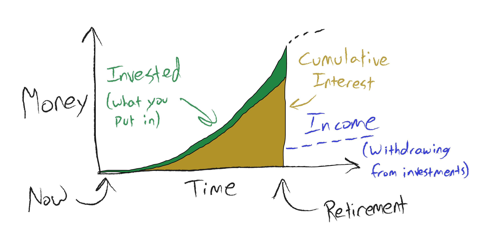
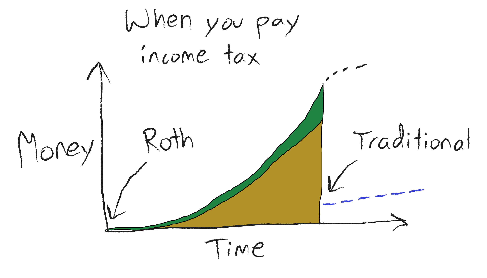
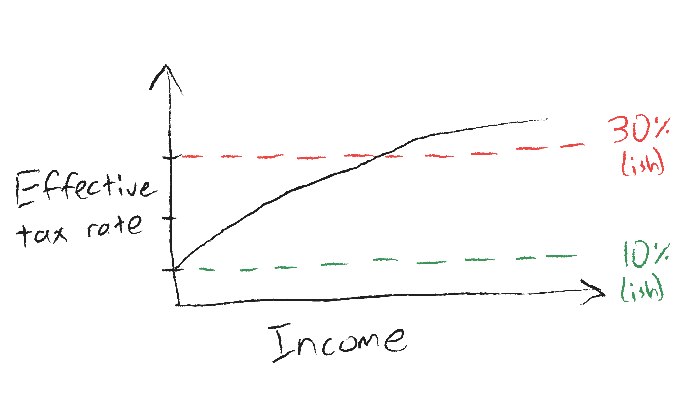
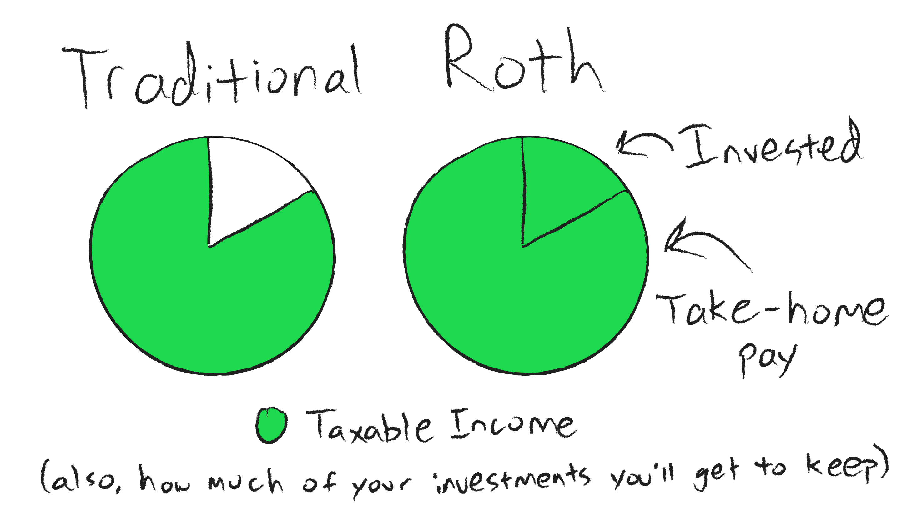

Roth vs. Traditional#
If you’ve ever learned about retirement savings account, you’ve likely been barraged by a flurry of words and terms with weird differences attached to each. Let’s break down the big categories and see the major differences between each.
First, there is the legal code or investment name: 401k, 403b, IRA, TSP, and probably others. They’re basically all the same thing. Each has slight differences, but those are insignificant for the current discussion. In every case, you end up with a pool of money that can be invested in a manner you control. The money is truly yours, it won’t vanish if Social Security or a pension fund goes under, it belongs to you like a bank account or any other investment.
And like any other investment, you need to put retirement savings into funds that will grow. In every case, you should put the money in, let it grow until you’re legally allowed to take it out, and then withdraw it as you need it. I’m not going to get into taking loans against these investments or pulling money out early, because those are terrible ideas for reasons I’ll discuss elsewhere.

Second, there is the method by which your money gets taxed. The main two options are “Traditional” and “Roth” (named after the senator whose law created it). There may be other options as well (after-tax contributions, for example), but those are pretty minor and can be easily understood once you grasp these two categories.
Here, it’s simple:
Money put into investments |
Money withdrawn from investments |
|
|---|---|---|
Traditional |
Not taxed |
Taxed as income |
Roth |
Taxed as income |
Not taxed |

That’s basically all there is to it. Contributions to Traditional funds (Traditional IRA, Traditional 401k, etc.) are “tax-deductible”, meaning the money you put in isn’t counted as income for that year. Contributions to Roth funds (Roth IRA, Roth TSP, etc.) are counted as income when you put the money in, but are tax-free when you finally withdraw from it. In both cases, the growth on your investments is tax-free.
I should point out here, not everyone has a Roth option. It depends on your particular 401k, 403b, or whatever you have. Even having access to a Roth IRA depends on your income (sort of, I’m aware of the backdoor). So just because Roth 401k’s exist, and you have a 401k, doesn’t mean you’ll be able to have a Roth 401k. If you’re not sure, ask HR at your company.
Why would you pick one over the other? Is there a clear winner?
I’ll preface the following discussion by saying that the advantages aren’t obvious or overwhelming for everyone. I consider Roth a clear winner in my own life. You may choose something else for yourself, and that’s fine so long as you plan accordingly.
Traditional#
When money goes in, it’s tax-deductible. When you get to retirement age and pull money back out, it’s taxed as income. Investment growth is tax-free while it’s growing, but is taxed when you withdraw that money.
In a perfect world, that would be simple. Unfortunately, in America, we have graduated income tax–that means, the more money you make in a year, the disproportionately more of it you pay in taxes. You’ll pay a higher percentage of your income (whether from your job now or from your investments later) in years you make more money. To make matters worse, tax rates can fluctuate from year to year, meaning income tax percentage may go up or down by the time you retire.

It’s complicated and unpredictable, but let’s work with what’s less complex. You’ll pay less money in taxes now, and more in taxes later. Let’s consider a basic example:
You make $50,000/yr. (The exact amount is largely irrelevant; except for differences in tax rates, the values below scale proportionally with whatever your actual income is, so long as the percentages remain the same.)
You have an effective tax rate of 20%, which would normally be $10,000.
You invest 15% into retirement, which is $7,500.
This means you’re only taxed on an income of $42,500. At 20%, that’s $8,500, which is a savings of $1,500. Your take-home income is thus $34,000.
Let’s say you invest the money in stocks and earn 10% interest, and contribute this money monthly over 30 years. Here’s a great calculator for this.
Give or take a little, you end up with $1,600,000 in assets, of which $250,000 was money you put in and the other $1,350,000 was interest.
Following the 4% rule-of-thumb, you would withdraw $64,000, pay your 20% in taxes, and take home $51,200.
Don’t forget to account for inflation. By the rule of 72 with a 2-4% inflation rate, expect the value of the dollar to be reduced to half or a quarter of its current value… that is, expect to need 2-4x your current income to maintain your current lifestyle. That makes the numbers above not as generous as they seem, but still a serious start.
Roth#
For a Roth account, when money goes in, it’s taxed like normal income. When money comes out, it’s tax-free. Same as before, interest gained on these investments is tax-free, but unlike with a Traditional account, they remain tax-free when withdrawn.
Like before, the tax situation complicates things. The only time you pay taxes is when you put money in, but depending on how you’re saving for retirement, it’s possible you’ll have a higher income now, and thus be paying more on taxes now. (Of course, if you’re investing generously and early, it’s very likely your income in retirement will be higher… maybe much higher…)
Let’s run the same scenario and see what happens. Disclaimer up front: the situation isn’t as obvious of a win as it might seem.
You make $50,000/yr.
You have an effective tax rate of 20%, which would be $10,000.
You invest 15% into retirement, which is $7,500.
Roth contributions aren’t tax-deductible, so you still have $50,000 in taxable income and pay $10,000 in taxes.
Your take-home pay is $50,000 - $10,000 - $7,500 = $32,500.
Let’s say you earn the same 10% interest, and contribute this money monthly over 30 years. The same calculations apply as before.
You still end up with approximately $1,600,000, mostly from interest. Great!
Following the 4% rule, you still pull out $64,000, but since it’s a Roth account, you keep it all.
Well hey, that retirement situation seems pretty nice. No taxes on millions of dollars? That’s awesome!
There’s no free lunch#

Let’s talk about the math first.
Mathematically, the extra money you’re reaping in retirement is because you invested more to begin with. The $7,500 you invested into the Roth cost you $7,500, but the $7,500 you put into the Traditional only cost you, after tax savings, $6,000. (By “cost you”, I mean how much it subtracted from your post-tax take-home pay.) Because of this, you actually invested less value into the Traditional fund, and reaped proportionately less.
Here’s the sneaky part, and why Roth isn’t automatically a win: if you invested $7,500 of value into the Traditional fund (that is, $9,375 so that, after the tax adjustment, you’d still take $32,500 home), after taxes you’d be able to withdraw almost exactly the same amount of money in retirement. That is, you’d have more money saved up, and when you withdrew 4% of that and pay taxes on it, you would end up with something very close to $64,000, same as Roth.
Psychologically, it’s easy to forget to invest the tax savings. It’s easy to put in the money you plan to save, 15% or whatever, and then spend the tax savings on your lifestyle. So while the math can work out the same either way, in practice you’re more likely to end up poorer in the end if you use a Traditional account.
So that’s why I choose Roth. I can tighten my belt, live on the slightly lower income caused by not getting the Traditional tax savings, and let the extra value accrue into future wealth. Even if you aren’t able to do so, I think it’s more intuitive to invest in a Roth option, even if you have to choose a lower percentage. If you choose otherwise, just understand that $1 in a Traditional account is worth less than $1 in a Roth (by whatever your retirement tax rate ends up being), and plan accordingly.